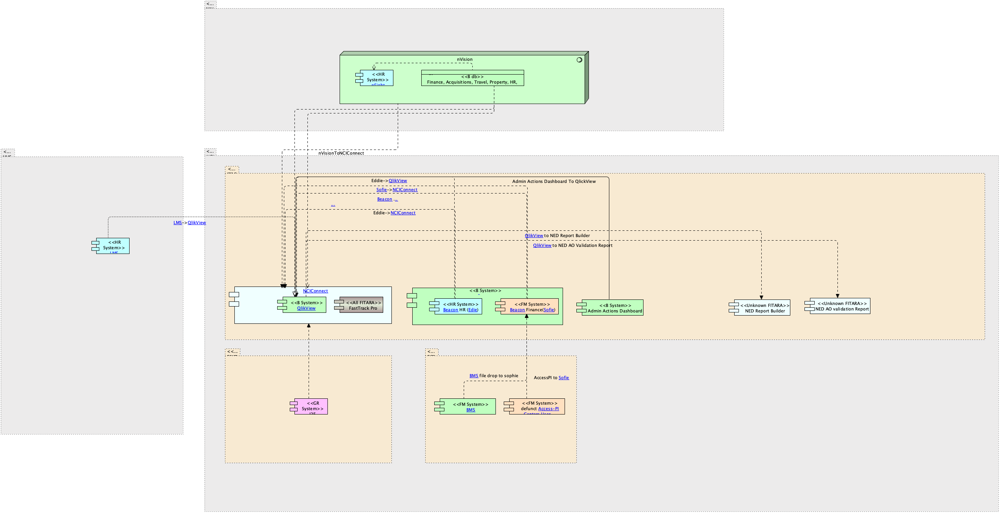

|
|
|
ArchiMate Diagram - ITRC
 link
link
| Jump to: |
|  |
| Model Elements |
| Name | Description | ||||
|
|
his API provides a way to lookup CCR staff members and managers based on CAN number. Technically both the BMS and CCR CAN API use the same database but they are two separate applications |
||||
|
|
|||||
|
|
|||||
|
|
IMPAC II Extension System - |
||||
|
|
|||||
|
|
Employee
Database Internet Edition(Edie)
- is a web based application that allows NCI to accurately
maintain individual employee, contractor, and volunteer information, as
well as plan for, monitor, and report on workforce staffing levels. With EDie,
users can update employee information quickly and easily, while also
having the ability to view the official records at any time. EDiE
blends official NIH employee and payroll information with Institute
specific staffing knowledge to deliver the most accurate and complete
Fiscal Year FTE and Cost projections available. The suite of ready to
run reports included with the system can be supplemented with additional
custom reports as well as user defined reports generated via the new Ad
Hoc Report builder.EDiE
was developed by Netcomm and is administered at NCI by the ITRC. https://ccrod.cancer.gov/confluence/display/OMIT/EDiE
Link to data dictionary http://edie.netcomm.net/help/help.asp?tID=169
Owner
- NCI
|
||||
|
|
|||||
|
|
|||||
|
|
Status of Funds Internet Edition - known as SOFiE, is a web-based tool for providing advanced financial reporting and analysis functionality to government clients. It is the favored tool among administrative staff for financial reporting and tracking. SOFiE gives organizations distributed budgeting and planning tools, custom budget category views, drill-downs for detailed spending analysis, and a powerful Excel interface. SOFiE's Excel interface allows for the development of spreadsheets using custom functions that extract real-time expenditure, budget, and planning data from the SOFiE databases.
Excel interfaces -https://ccrod.cancer.gov/confluence/display/OMIT/Shared+SoFie+Excel+Spreadsheets
Owner - NCI |
||||
|
|
|||||
|
|
FastTrack
lets
you electronically route and track any package online using electronic
route slips and attachments. It is fast, enables tracking of packages,
sends email alerts when you have an action, stores all packages, and
provides a source of metrics regarding what we do and how long it
takes.
Digital
signatures can be used. We will build a library of templates to bundle
the instructions, forms and delegations, and other supporting
information to promote complete packages that use the correct forms.
Key
features:
·
Provide
everything you need for a package in an easy-to-use and manageable place
·
Eliminate
packages that have to go back because someone used the wrong form
·
Centrally
capture updates to policy and guidance online, immediately for use, so
that the very next package is done right
·
Build
digital signature templates to support delegations of authority
·
Begin
to measure our output
|
||||
|
|
Used
to created provisioned sites in less than a day when a site is needed to
provide a central workspace to communicate, share, and build solutions.
Commonly used for committees/working groups. |
||||
|
|
QlikView – COTs application for business intelligence, data discovery and dashboards. IC-led effort to provide dynamic reporting of enterprise and IC-owned data that complements the suite of reporting tools already provided by nVision Data Warehouse and QVR. Can use data from ODBC(oracle,db2 sql server, access), QVDS,Excel, ACCESS, XML
Sources
|
||||
|
|
NCiConnect
is a purpose-built suite of COTS products selected to perform specified
functions in an integrated way. It is designed to be re-used over and
over to provide a continual stream of new solutions supporting
administrative processes, information and decision making, policy and
guidance and communication.
NCiConnect
was purpose built to directly support administrative operations in the
following way
Central
location for policy/guidelines/delegations bundled with associated
electronic workflows and supporting reports to provide a complete
resource to conduct business electronically
·
Single
place to adjust for changing policies, procedures and organizational
structure in real time
·
Platform
to announce changes to general and targeted user audiences.
·
Home
for on-line training and user support resources including a help desk.
·
Using
this we can
o
substantially
reduce time spent performing administrative functions
o
Provide
a source of metrics on administrative activities
o
Apply
role-based provisioning so the same site can be used to support numerous
audiences and purposes
Improving
administrative operations through application of modern information
technology resources is achieved focusing on three primary functional
areas within NCiConnect;
·
Process
Automation
·
Content
Management
·
Advanced
Analytics and Reporting
The
platform is designed to bundle these together. Site provisioning is
used so the same platform can be used to provide new tools and resources
to meet specific needs of all audiences.
It
is important to note that NCiConnect
is strictly an intranet resource. Only those with NIH PIV cards
can access it. And then within the site, only the spaces they have been
provisioned to see.
NCiConnect
uses Microsoft Dynamics and K2 Black Pearl to build automated workflows
to perform the following functions;
·
Provide
a means to electronically route, track and save administrative packages
·
Replacing
paper forms with digital forms
·
Autofill
forms where possible
·
Leverage
role-based provisioning
·
Email
notification and “in-box” dashboard for managing action items
·
Process
actions on mobile devices
·
Generate
alerts and notifications
·
Archiving
completed packages
·
Enforce
business rules
·
Provide
metrics on compliance, timing, number of actions, etc.
·
Web-based
– access from anywhere
·
Couple
necessary guidance, delegations, forms and with the workflow
·
Ensures
even a new staff member can correctly complete an action correctly the
first time
·
Provide
a central place to update policy, delegations, guidance and forms so the
very next package is correct
Microsoft
SharePoint
is used to provide our intranet environment employing role-based
provisioning across the site collection.
·
Central
place for policy, guidance, delegations of authority and associated
forms
·
Provisioned
home to post automated workflows, policy/delegations/forms and
dashboards and analytics
·
Alerts,
announcement and news arranged and provisioned to targeted groups
·
Dynamic
calendars of important dates
·
Place
to house and organize all other web tools, reports and systems hyperlinks
·
Tagged
content with Google-like search capabilities
·
Embedded
automated workflows and dashboards to monitor the status of actions
·
Embedded
metrics and reports
·
Dedicated
content management support to ensure what is on site is current and
accurate, links are active, etc.
·
Build
and facilitate ongoing partnerships with our business owners providing
support, project management, change management and development support
for NCiConnect
projects.
Incorporate
QlikView, SSRS and other custom dashboards co-located with reports and
analytical tools created by others.
·
Dynamic
graphical reports for data used often
·
Consolidated
data from almost any source with automatic loads and dedicated support
·
On
screen filter/drill through capability to see data at any granularity
·
Ability
to share and distribute reports
·
User
provisioning to control access to data and reports
·
Filter,
sort and drill through data on the fly
·
User
training provided
·
Dedicated
help desk to maintain reports
·
Standardized/normalized
data
·
No
need for you to query, consolidate and format data if we can build a
report for you
Provides the following dashboards and reports to the NCI:
Provides the following Production Application Sites
|
||||
|
|
|||||
|
|
|||||
|
|
HHS Learning Portal (LMS) – Place to search for HHS instructional class.
Owner - HHS |
||||
|
|
|||||
|
|
nSight – The nVision nSight HR application is a workforce planning and analytics application that will allow ICs to track, manage and plan their staffing needs for all staff types using a web based enterprise application while maintaining enterprise standards. nSight provides a full picture of an IC’s workforce which enables the planning and management of personnel, including tracking different types of staff and forecasting future staffing needs. In addition, nSight provides
System link - https://ccrod.cancergov/confluence/display/OMIT/nSight |
||||
|
|
https://nvision.nih.gov/nvision_registration/registration_guide.html#IntroductiontonVision |
||||
|
|
|||||